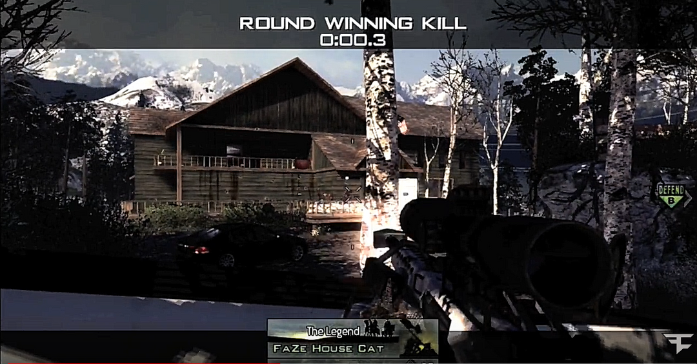

What is a trickshot?
In 2010 Call of Duty was solidifying itself as a staple in the gaming industry after it's 2 prior titles COD 4 Modern Warfare and COD World at War titles were very successful. Now that community was growing at a rapid rate, it left the door open for new communities to enter the space. The Trickshoting community was one of those. Now before we continue, what even is a trickshot? Essentially an unnecessary way to take down the enemy using a sniper rifle for the sake of style. Although this did not help people complete the objective of the game, this gave many players an escape from the repetitive nature of Call of Duty and a way to grow as a player in a different, more creative way.
